디자인 경험을 콘텐츠로
디자인 소식, UX/UI와 인턴 경험을 글로 정리하며 개인 채널 운영을 시작했습니다.
UX/UI × GROWTH MARKETING · 지원 포트폴리오
디자인이 가능한 마케터
고객이 이해하고 행동하기 쉬운 경험을 기획하고, 콘텐츠와 화면을 직접 디자인해 웹으로 구현합니다. 블로그 운영과 기업 웹 리뉴얼에서 반응과 전후 지표를 살핀 경험을 바탕으로, UX/UI 역량을 고객 유입과 전환 개선에 연결하는 이은규입니다. 고객 문제를 이해하고, 콘텐츠와 웹을 직접 만들어 개선하는 그로스 마케터가 되겠습니다.
기획 → 디자인 → 웹 구현 → 반응 확인 → 다음 개선. 직접 만들 수 있는 실행력으로 가설을 구체적인 화면과 콘텐츠로 옮기겠습니다.
9월 → 10월 블로그 조회수
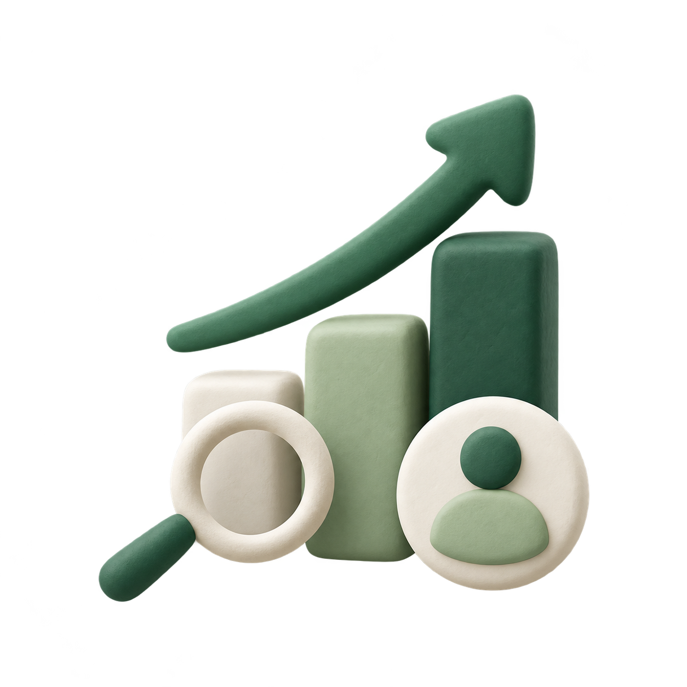
네이버 블로그 월간 통계 · 2026.11.02 확인
콘텐츠 주제와 발행량이 함께 변한 운영 결과입니다.
01 / OWNED CHANNEL · 개인 블로그 운영
일과 삶의 디자인 (이전 이름: 디자인 일기장)
다양한 주제의 글을 직접 운영하고, 이번 회고에서 검색 수요와 다음 집중 방향을 확인했습니다.
디자인 소식과 경험을 나누는 글로 시작한 뒤, 낮은 조회수에 대한 고민으로 청년 정책·군 관련 정보까지 주제를 넓혔습니다. 2026년 11월 2일 통계를 돌아보니 10월 조회수 상위 5개 글이 모두 군 관련 정보였습니다. 이를 근거로 군 보직·입영 정보를 중심으로 운영 방향을 좁히는 계획을 세웠습니다.
디자인 소식, UX/UI와 인턴 경험을 글로 정리하며 개인 채널 운영을 시작했습니다.
청년 정책과 군 보직·복무 정보 등 독자가 찾아볼 만한 주제를 함께 발행했습니다.
월간 지표·유입 경로·게시물 순위를 비교하며 군 관련 정보의 반응을 확인했습니다.
군 관련 정보의 후속 글과 내부 연결을 보강하고, 발행 후 같은 기간의 반응을 비교하려 합니다.
| 2026년 | 조회수 | 순방문자 | 평균 사용 시간 |
|---|---|---|---|
| 8월 | 111회 | 60명 | 2분 19초 |
| 9월 | 233회 | 106명 | 2분 45초 |
| 10월 | 3,771회 | 3,214명 | 3분 49초 |
막대 높이는 0을 기준으로 표시했습니다. 완료된 월끼리 비교했으며, 조회수와 순방문자는 서로 다른 지표입니다.
| 게시물 주제 · 발행일 | 10월 조회수 |
|---|---|
| 군대 보직 종류 총정리2026.10.14 | 786회 |
| 군대 운전병 종류 총정리2026.10.22 | 251회 |
| 군대 계급별 월급·복무기간2026.10.17 | 215회 |
| 군대 통신병 종류 총정리2026.10.23 | 185회 |
| 군대 특전사 종류 총정리2026.10.24 | 181회 |
게시물별 누적 조회수가 아닌 10월 조회수입니다. 발행일이 달라 노출 기간은 동일하지 않습니다.
상위 글은 보직 종류·지원 방법처럼 구체적인 질문에 답하는 정보였습니다. 독자가 실제로 찾는 질문을 제목과 목차에 반영하는 방향을 다음 운영 기준으로 삼았습니다.
10월 유입 경로 중 네이버 통합검색은 모바일 62.33%, PC 23.93%로 합계 86.26%였습니다. 디자인 글도 반응이 있어, 주제별 성과를 계속 비교할 필요가 있습니다.
10월 재방문자는 15명, 재방문율은 0.5%였습니다. 이전 달에도 방문한 사람의 비중으로, 새 유입이 늘어난 영향도 함께 봐야 합니다. 관련 글 연결과 후속 콘텐츠를 다음 과제로 정했습니다.
출처: 본인 네이버 블로그 관리자 월간 통계, 2026.11.02 확인 · 네이버 재방문율 정의 · 공개 블로그
02 / COMPANY PROJECT · UX · SEO · CONSULTATION
아이원소프트뱅크 기업 홈페이지 리뉴얼
UX/UI 디자인·화면 개발·제품 콘텐츠 정리
ERP·PMS의 제품 이해에서 상담 전 참여까지 연결했습니다.
ERP·PMS를 검토하는 고객에게 필요한 것은 제품의 실제 모습과 자신의 업무에 맞는 도입 이유라고 보았습니다. 제품 이미지의 품질과 설명의 정확도를 높이고, 검색 유입부터 자가 진단·상담까지 이어지는 경험을 개선했습니다.
2026년 9월(개선 전) → 10월(개선 후 1개월) · GA4·Google Search Console·관리자 고객 DB · 본인 제공 집계. 문의·유입·재방문은 비율 지표의 변화입니다. 기준값·계산식·원본 보고서는 미첨부이며, 여러 개선을 함께 적용한 전후 비교입니다.
제품 이미지를 업스케일링하고 크기를 확장했습니다. 설명에 맞는 실제 제품 화면으로 교체하고 확대 뷰를 추가해, 화면의 세부 정보를 충분히 살펴볼 수 있도록 했습니다.
반복 이미지·내용을 줄이고 제품별 핵심 설명과 관련 키워드·해시태그를 정리했습니다. 영문 제품명에 국문명을 함께 표기하고 HTML 메타태그를 구성했습니다.
ERP 가상 컨설팅 체크리스트를 도입했습니다. 고객이 질문에 답하며 업무 환경을 돌아보고, 도입 필요성을 구체화한 뒤 상담을 요청하도록 기획했습니다.
무거운 영상 중심 구성과 반복 콘텐츠를 정리하고, JSP(Java 서버페이지)로 화면을 개발했습니다. 전후 지표로 화면 품질과 이용 편의를 함께 살폈습니다.
그로스와의 연결 · 제품을 알아보기 쉽게 만드는 UX, 검색 접근성을 고려한 콘텐츠, 상담 전에 참여할 수 있는 진단 도구를 함께 개선했습니다. GA4·Search Console과 고객 DB를 바탕으로 문의·유입·재방문 변화를 확인한 실무 경험입니다.
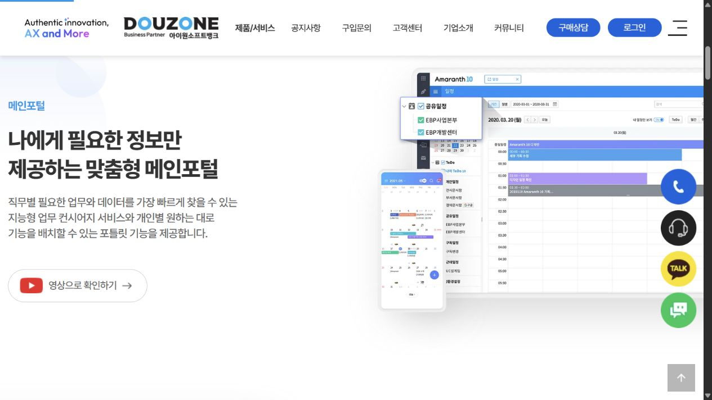
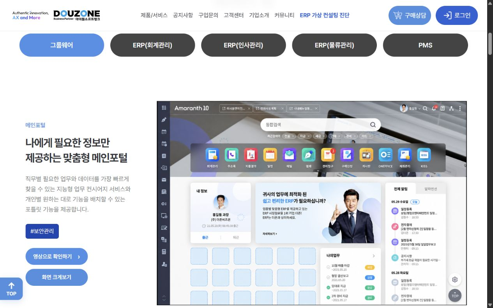
개선 의도 · 메인포털 설명에는 실제 메인포털 화면을 배치하고, 화면을 크게 살펴보는 동선을 더했습니다. 설명과 이미지의 맥락을 맞춰 제품을 검토하는 고객의 이해를 돕고자 했습니다.
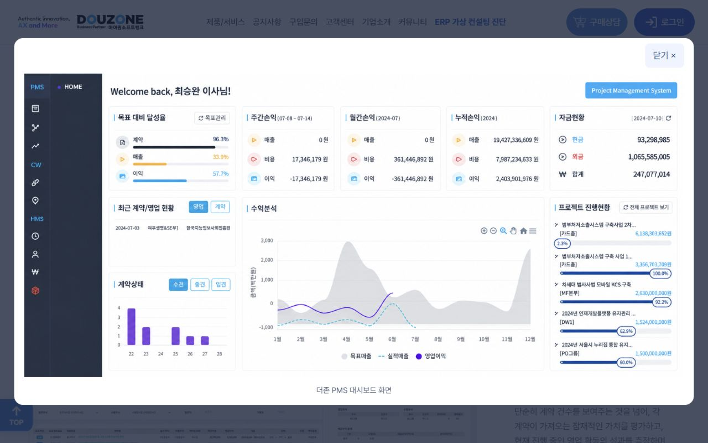
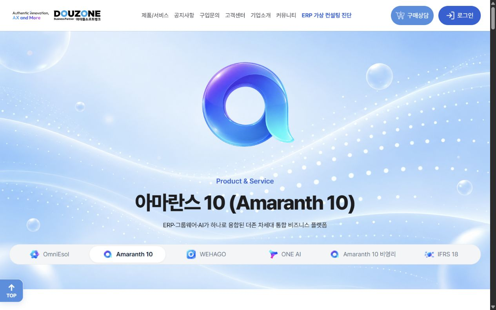
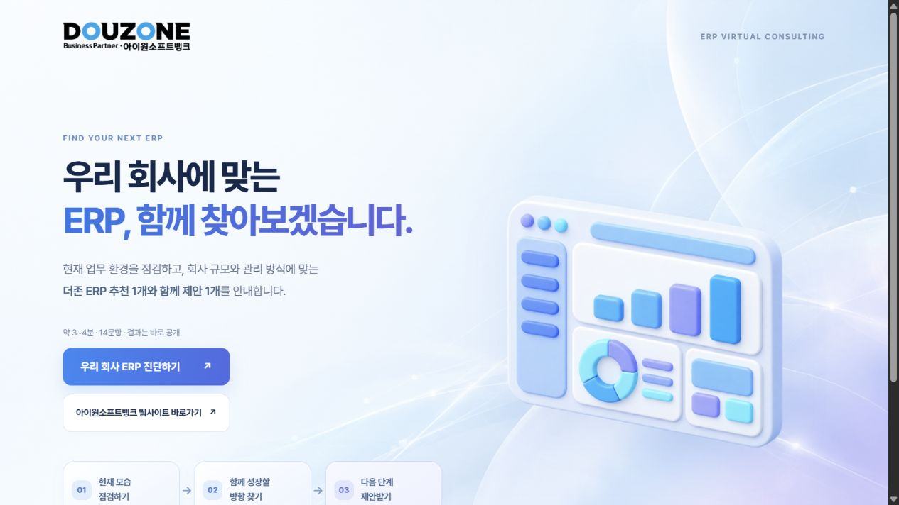
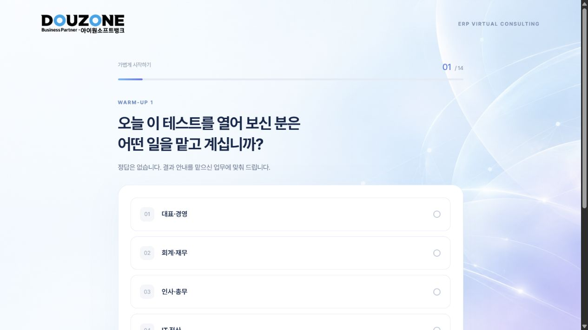
AFTER / HTML & CONTENT EVIDENCE
페이지의 메타정보와 화면에 보이는 설명을 함께 구성했습니다. 제품명·기능·도입 가치를 일관되게 전달하고, 방문자가 제품을 이해한 뒤 상담을 검토하도록 돕는 것이 목적입니다.
title과 description에 제품명·그룹웨어·ERP 통합 등 페이지의 핵심 맥락을 담았습니다. 검색 결과에서 어떤 제품과 기능을 설명하는지 이해할 수 있도록 구성했습니다.
OG 태그는 링크 공유 시 페이지의 성격과 미리보기를 전달하기 위한 정보로 구분해 작성했습니다.
메인포털 설명 옆에 ‘#보안관리’처럼 관련 기능을 짧게 표시해, 고객이 제품의 기능 맥락을 빠르게 파악하도록 했습니다. 국문 제품명과 구체적인 기능 설명도 함께 사용했습니다.
키워드와 해시태그는 고객의 질문에 맞는 정보를 정리하는 수단입니다. 검색 순위가 자동으로 오르는 효과로 설명하지 않습니다.
메타태그 역할 구분: Google은 meta keywords를 색인·순위에 사용하지 않습니다. 핵심은 설명과 실제 본문의 관련성, 크롤링·색인 접근성을 함께 정리하는 것입니다. Google 공식 메타태그 안내 ↗
캡처: 2026.11.03 · 기존 공개 사이트와 리뉴얼 결과물의 공개 HTML 미리보기에서 직접 확인한 화면입니다. 9월 당시의 화면 기록은 아니며, JSP 적용과 9–10월 성과는 본인 제공 프로젝트 경험·집계를 바탕으로 작성했습니다. 제품 화면 안의 예시 수치는 본인의 사업 성과로 사용하지 않았습니다.
03 / USER RESEARCH · GPTers 개인 리뉴얼
직접 사용자 인터뷰·리서치를 진행한 UX/UI 프로젝트입니다. 조사에서 발견한 문제를 정보 구조와 화면 설계로 연결했습니다.
사용자 13명을 인터뷰하며 GPTers의 첫인상과 정보 탐색 경험을 살폈습니다. 주요 문제는 낮은 가독성, 복잡한 정보 구조와 레이아웃, 한눈에 이해하기 어려운 사이트 정체성이었습니다. 이용을 시작하기 전에 겪는 이해의 어려움을 줄이는 방향으로 리뉴얼을 기획했습니다.
중요한 정보와 보조 정보의 위계를 정리하고, 제목·본문·여백의 관계를 명확하게 만드는 방향으로 설계했습니다.
복잡한 구조를 정리하고, 역할별 AI 활용 사례와 스터디 정보를 찾는 동선을 중심으로 콘텐츠를 재구성했습니다.
첫 화면에서 서비스의 가치와 이용 목적을 이해하고, 사례 탐색과 참여라는 다음 행동을 찾을 수 있도록 기획했습니다.
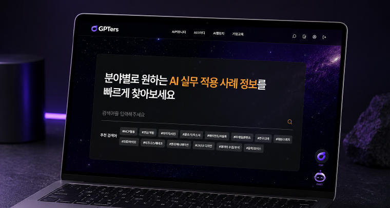
그로스 관점에서 이 프로젝트는 서비스를 처음 만난 사용자가 가치를 이해하고 탐색을 시작하는 과정과 연결됩니다. 단순히 화면을 바꾸는 데서 출발하지 않고, 사용자가 이용을 망설이는 이유를 직접 듣고 설계의 기준으로 삼았습니다.
린 캔버스에는 사례 클릭률, 스터디 신청 전환율, 결과물 업로드 비율과 재방문을 확인할 지표로 제안했습니다. 인터뷰와 제작은 수행한 경험이며, 리뉴얼 후 전환율 개선은 앞으로 검증할 과제입니다.
인터뷰 인원·주요 발견: 본인 수행 경험 제공. 13명 전원이 같은 의견이었다는 뜻은 아니며, 개선 후의 사용자 평가나 운영 지표와 구분합니다.
04 / TEAM RESEARCH → CONVERSION UX
N서울타워 리뉴얼 · KDT 팀 프로젝트
팀장·PM / UX 기획 / 일부 디자인·개발
방문 여정의 불편을 정리하고 프로토타입 평가를 살폈습니다.
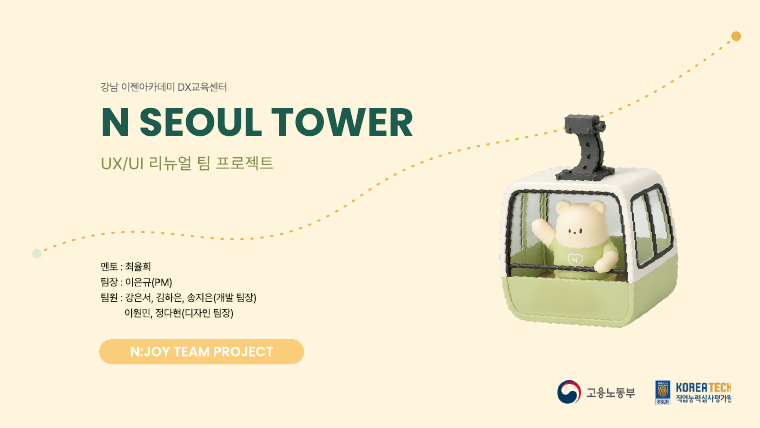
현장 방문과 인터뷰·리뷰를 토대로 대기와 정보 탐색의 불편을 정리했습니다. 예약 CTA, N패스, 재방문 콘텐츠를 포함한 방문 여정을 제안했습니다.
담당 범위: UX 기획과 문제 정의, 문서·일정 관리, 음식점 페이지 디자인·개발, 인트로 개발, 평가 체크리스트 정리와 발표에 참여했습니다.
| 프로토타입 평가 항목 | 긍정 응답 |
|---|---|
| 필요한 정보 찾기 | 14 / 14 |
| 예약 CTA 이해·접근 | 9 / 14 |
| N패스 안내 | 8 / 14 |
| 재방문 콘텐츠 매력 | 8 / 14 |
보고서 42–43쪽 · 문항별 평가 응답 14개 중 ‘매우 그렇다·그렇다’ 합계. 응답자 구성과 표본의 대표성은 확인되지 않았습니다.
그로스와의 연결 · 정보 탐색 평가는 긍정적이었지만, 예약 CTA·N패스·재방문 콘텐츠에는 추가 설명과 검증의 여지가 남았습니다. 이를 다음 개선 과제로 읽을 수 있습니다. 실제 예약률·매출·재방문율의 상승을 측정한 결과는 아닙니다.
05 / B2B · 고객 여정을 뒷받침하는 제작
아이원소프트뱅크 인턴 제작 경험을 고객 여정 관점으로 다시 정리했습니다. 웹·진단 도구·제안 자료·CRM 화면이 각각 어떤 역할을 할 수 있는지 설명합니다.
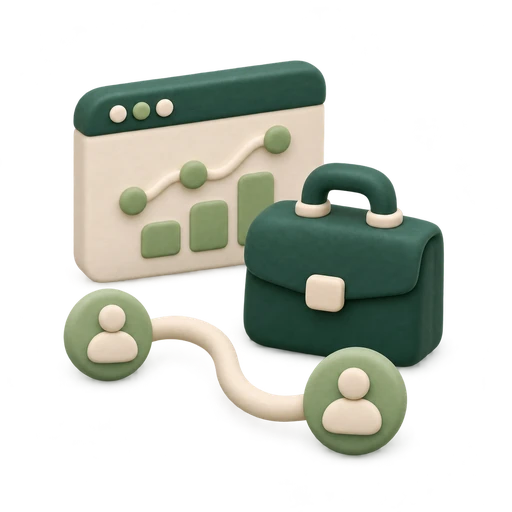
제품을 처음 알게 된 고객이 정보를 이해하고, 자신의 상황을 확인하고, 상담과 제안으로 이어지는 과정을 지원하고 싶습니다. 기존 제작물들을 하나의 여정 관점으로 연결해 보았습니다.
이음스퀘어, 아이원디지털웨어, 아이원소프트뱅크 웹사이트의 UX/UI와 화면 개발. 브랜드·서비스 정보를 웹으로 구조화했습니다.
리뉴얼 전후 문의·유입·재방문을 비교한 경험을 바탕으로, 제품별 상세 탐색과 문의 동선을 더 세분화해 살펴보려 합니다.
AX/DX 체크리스트와 ERP 가상 컨설팅 체크리스트. 질문에 응답하고 결과를 살펴보는 웹을 구현했습니다.
진단 시작·완료·결과 확인·문의 이동을 구분해 보고, 중간에 멈추는 단계와 질문의 부담을 살펴보려 합니다.
이음스퀘어 회사소개서, PMS 구축 제안서와 제안서 라이브러리. 고객에게 필요한 설명 자료를 정리하고 디자인했습니다.
반복되는 질문과 자료 요청을 기록해 설명 자료에 반영하고, 고객이 다음 단계에서 필요로 하는 정보를 보완하려 합니다.
CRM 디자인 시스템과 UI 리뉴얼·화면 개발. 리드·활동·유입 정보 등을 확인하는 화면을 설계했습니다.
문의 유입 경로와 진행 단계, 다음 연락 일정을 연결해 고객 대응을 지원하고자 합니다. 실제 운영 데이터 연동은 추가 과제입니다.
06 / CUSTOMER DATA · 진단에서 상담 준비까지
ERP·AX/DX 진단 체크리스트 제작 경험을 바탕으로, 관리자 페이지의 고객 DB를 정리하고 상담·콘텐츠 개선에 활용하는 운영 방향을 제안합니다.
고객이 남긴 진단 응답과 상담 요청 정보를 함께 살피면 어떤 업무에서 어려움을 겪는지, 어떤 설명이 더 필요한지 파악할 수 있습니다. 수집 → 정리 → 과제별 분류 → 후속 실행으로 이어지는 작은 운영 흐름부터 만들고자 합니다.
진단 응답·결과·신청일과 상담 동의 정보를 수집 항목으로 설계합니다. 업종·기업 규모·관심 모듈은 필요에 따라 추가할 항목의 예시입니다.
중복 신청과 누락값을 확인하고, 회사명·업종·관심 제품의 표기를 통일합니다. 진단 ID와 신청일 등 연결 기준을 정해 비교 가능한 목록으로 정리합니다.
회계·인사·물류 등 관심 업무와 진단 결과를 기준으로 묶습니다. 도입 검토 단계와 주요 질문을 함께 기록해 필요한 안내의 차이를 파악합니다.
상담 전 확인할 질문과 설명 자료를 준비하고, 반복되는 어려움은 제품 FAQ·소개 페이지·제안서에 반영하는 개선안을 만듭니다.
진단 결과와 상담 이력·다음 연락 일정을 정리해, 고객이 같은 설명을 반복하는 부담을 줄이는 방향으로 활용합니다.
자주 등장하는 업무 과제와 제품 질문을 집계해, 업종별 안내 글·랜딩 페이지·상담 자료의 주제를 정합니다.
진단 완료 ÷ 진단 시작, 상담 신청 ÷ 진단 완료 등 분모를 정한 지표로 흐름을 살피고, 이탈 단계와 질문 구성을 점검합니다.
07 / SEO & GEO · 검색 접근성 설계
HTML 메타태그 작성부터 사이트맵 생성·검색엔진 등록까지 직접 진행한 경험을 바탕으로, SEO와 GEO를 고려한 웹 제작·콘텐츠 구조화를 수행할 수 있습니다.
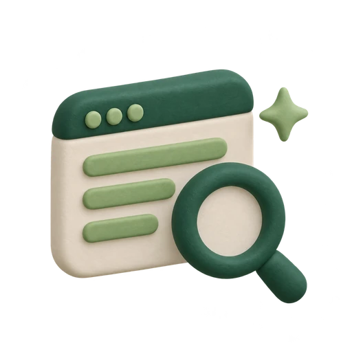
사이트맵을 생성하고, Google Search Console에 제출해 검색엔진 등록과 색인 요청을 직접 진행했습니다. 웹 제작 이후 검색엔진이 페이지를 발견할 수 있도록 준비하는 과정까지 경험했습니다.
title·description, canonical과 시맨틱 HTML을 작성해 페이지의 주제와 정보 구조를 명확하게 전달할 수 있습니다. Open Graph 메타태그와 og:image로 링크 공유 미리보기도 구성합니다.
sitemap.xml 생성·제출 경험을 바탕으로 검색 등록을 진행할 수 있습니다. robots.txt와 크롤러 접근성, 내부 링크를 고려해 검색엔진이 페이지를 탐색할 수 있도록 웹을 구성합니다.
핵심 설명을 텍스트로 제공하고, 명확한 제목·소제목과 질문에 답하는 구성, 출처·관련 링크를 활용해 콘텐츠를 구조화할 수 있습니다. 검색엔진과 생성형 AI가 내용을 파악하기 쉬운 웹을 설계합니다.
실제 수행 경험은 사이트맵 생성·제출과 검색 등록·색인 요청입니다. GEO는 메타데이터·콘텐츠 구조·크롤러 접근성을 함께 고려하는 제작 역량으로 소개합니다.
08 / ADS & REPORTING · 광고 게재·성과 확인
웹 제작 역량을 활용해 광고코드를 적용하고, 서비스별 광고 게재 설정과 성과 지표 확인 업무를 수행할 수 있습니다.
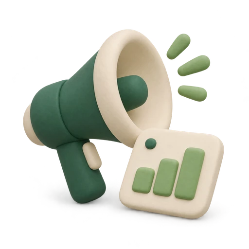
웹사이트에 애드센스 광고코드를 삽입하고 광고 게재 상태를 확인할 수 있습니다. 대시보드와 보고서에서 노출수·클릭수·클릭률·예상 수익 등 제공되는 성과 지표를 확인할 수 있습니다.
웹사이트에 광고코드를 삽입하고 광고 게재 상태를 확인할 수 있습니다. 매체·광고 단위별 보고서에서 노출·클릭과 예상 수익 등 제공되는 지표를 확인할 수 있습니다.
미디어 등록과 광고 노출 설정 방법을 이해하고 있습니다. 광고 게재 여부와 보고서의 노출·클릭·수입 등 제공되는 성과 지표를 확인할 수 있습니다.
제작과 운영을 함께 지원 · 광고가 표시되는 웹 환경을 이해하고, 광고 설정과 보고서 확인을 연결할 수 있습니다. 성과 지표를 정리해 콘텐츠와 광고 배치를 검토하는 운영 업무에 기여하겠습니다.
09 / CONTENT & CAMPAIGN
실무에서 제작한 홍보물과 교육 과정에서 기획한 캠페인을 구분해 소개합니다.
Web3 프로젝트에서 랜딩 페이지와 홍보 콘텐츠를 디자인했습니다. 서비스의 특징을 이해하고 채널에 맞게 메시지를 옮기는 경험을 쌓았습니다.
그로스 실행에 필요한
소재와 웹을 직접 제작할 수 있습니다.
광고비·도달·클릭률·전환 성과는 자료에서 확인되지 않아 수치로 제시하지 않았습니다.
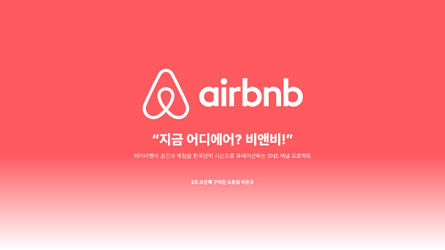
국토대장정을 하는 내·외국인 여행자가 자신의 현재 위치를 재미있는 인증샷으로 공유하고, 주변 에어비앤비 숙소·체험을 찾아 이용하도록 기획한 참여형 캠페인입니다.
2일 교육 팀 프로젝트 · 디자이너 참여
20–30대 중심 · 인스타그램 3주 운영 제안
기획·목업 제작 사례입니다. 실제 집행 결과는 아니며, 목업 속 반응 수는 성과로 사용하지 않았습니다.
CAMPAIGN DEEP DIVE · 지금 어디에어
여행자의 자발적 콘텐츠 참여를 지역 기반 숙소 발견과 이용 동기로 연결하는 기획입니다.
국토대장정 중 내 위치를 재미있는 인증샷·스토리로 공유합니다.
지역 필터·해시태그·리그램으로 서로의 여정에 관심을 갖게 합니다.
현재 위치와 다음 이동 지역의 공간·체험 추천을 함께 제공합니다.
여정 중 머물 곳이 필요한 순간에 에어비앤비를 떠올리도록 설계합니다.
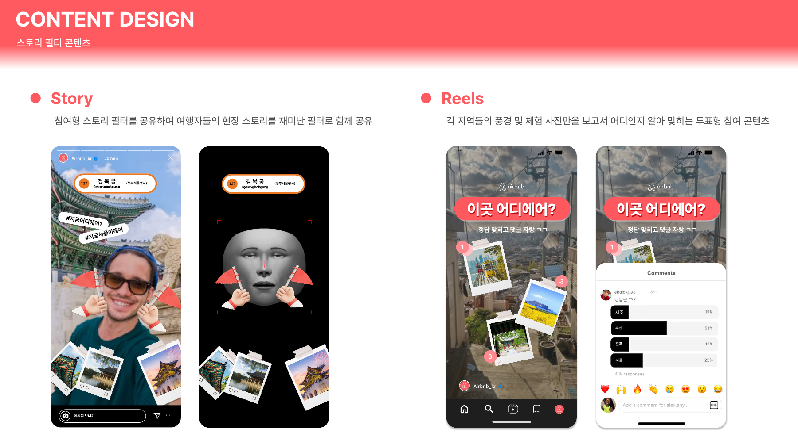
그로스 관점의 기획 · 브랜드 노출에 참여 동기를 더하고, 참여를 지역 숙소 탐색으로 연결했습니다. 실제 집행·예약 성과를 측정한 사례는 아니며, 실행 시에는 참여 게시물·리그램 반응·숙소 링크 클릭·예약 페이지 이동을 구분해 확인할 계획입니다.
10 / SUPPORTING WORK
그로스와 직접 연결되는 근거는 위의 운영·리서치 사례에 집중했습니다. 아래 아카이브는 UX/UI와 웹 구현 역량을 보완하는 자료로, 필요할 때 펼쳐볼 수 있습니다.
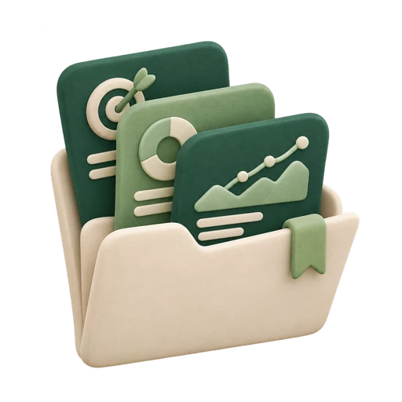
개인 웹 제작물은 운영 성과나 고객 리서치 사례로 확대하지 않고, 디자인과 웹 구현을 직접 수행할 수 있다는 근거로 제시합니다.
전체 16개 항목
13명 사용자 인터뷰와 리서치, 정보 구조·UX/UI 설계 및 웹 제작. 대표 리서치 사례로 소개합니다.
관광 정보와 예약 안내를 구성한 개인 UX/UI·웹 제작 작업입니다. 팀 프로젝트의 조사·평가 결과와 구분합니다.
현장 조사와 프로토타입 평가를 바탕으로 예약 CTA·재방문 콘텐츠의 개선점을 찾을 수 있습니다.
‘지금 어디에어’로 국토대장정 여행자의 위치 인증·공유를 주변 숙소 탐색과 연결한 캠페인 제안입니다.
LKB·Spla Labs·Tissue Box·IP Patent·TODL·REDBUTTON. 서비스 소개와 다채널 소재 제작 경험입니다.
기업 웹 리뉴얼과 진단·제안 자료·CRM 제작. 아이원소프트뱅크 리뉴얼의 전후 성과와 화면 개선은 대표 사례로 소개합니다.
우주 정보를 인터랙티브 탐색 경험으로 구현했습니다. 콘텐츠 구성과 웹 제작 역량을 보여주는 보조 작업입니다.
기술 주제를 화면과 인터랙션으로 표현한 개인 웹 제작 작업입니다.
서비스 소개 정보의 구조화와 반응형 웹 화면 제작 경험입니다.
콘텐츠의 분위기와 메시지를 시각 언어로 표현한 개인 웹 제작 작업입니다.
시각적 탐색과 인터랙션을 구현한 개인 웹 제작 작업입니다.
정보 배치와 화면 간 상호작용을 구현한 UX/UI·웹 제작 작업입니다.
감성적인 콘텐츠와 메시지를 화면으로 표현한 개인 웹 제작 작업입니다.
전시·작품 정보를 탐색하는 화면을 디자인하고 구현한 작업입니다.
가상 거래 플랫폼의 제품 UI와 사용 흐름을 구현한 작업입니다. 실제 투자·사업 성과를 의미하지 않습니다.
제품 화면과 기능을 구현한 개인 웹 제작 작업으로, UI 구성과 구현 능력을 보여줍니다.
1110 / BACKGROUND & TOOLS
제품 디자인과 수강생·강사·기업을 연결하는 취업 지원 운영 경험을 바탕으로 실행하고 소통하겠습니다.
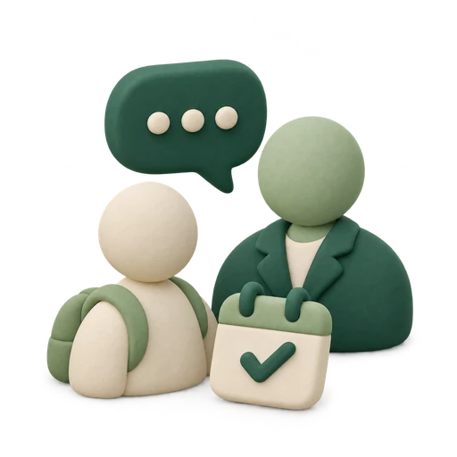
취업매니저로 근무하며 다음 업무를 담당했습니다.
기업·프로젝트 웹사이트와 서비스 홍보에 필요한 랜딩·뉴스레터·SNS 소재 등을 제작했습니다.
인턴기업 웹사이트, 제안서·회사소개서, AX/DX·ERP 진단 웹과 CRM UI 등 B2B 제작 업무를 수행했습니다.
인턴 · 2개월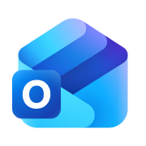
Outlook
Grok1211 / NEXT STEP · 입사 후 확장하고 싶은 업무
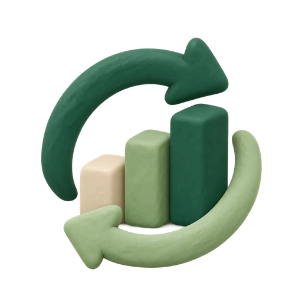
고객이 제품을 알게 된 순간부터 실제 계약을 맺고 서비스를 지속적으로 이용하기까지, 고객의 행동과 현장의 피드백을 함께 살피고 성장을 방해하는 문제를 개선하는 사람이 되겠습니다.
먼저 블로그에서 발행 후 같은 기간의 글별 반응과 관련 글 이동을 비교하는 작은 실험부터 시작하겠습니다. B2B 업무에서는 고객의 질문·요구사항을 기록하고, 문의 동선과 설명 자료를 개선하는 실행에 기여하겠습니다. GA4·Search Console과 고객 DB로 전후 지표를 확인한 경험을 바탕으로, 이벤트 수집 설계와 실험 방법을 더 정교하게 익히겠습니다. 트래픽과 조건이 갖춰졌을 때 A/B 테스트를 적용하겠습니다.
온라인 포트폴리오: https://leejinho970715-star.github.io/marketing_resume/growth-portfolio/
UX/UI와 디자인 실행력을 바탕으로 고객의 다음 행동과 성장을 연결하겠습니다.